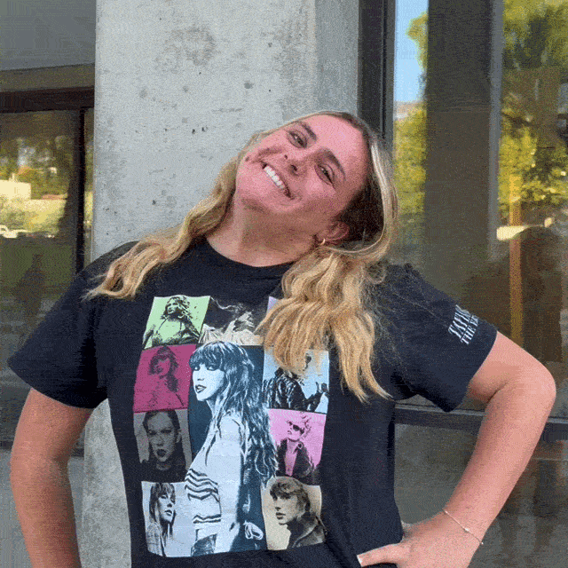
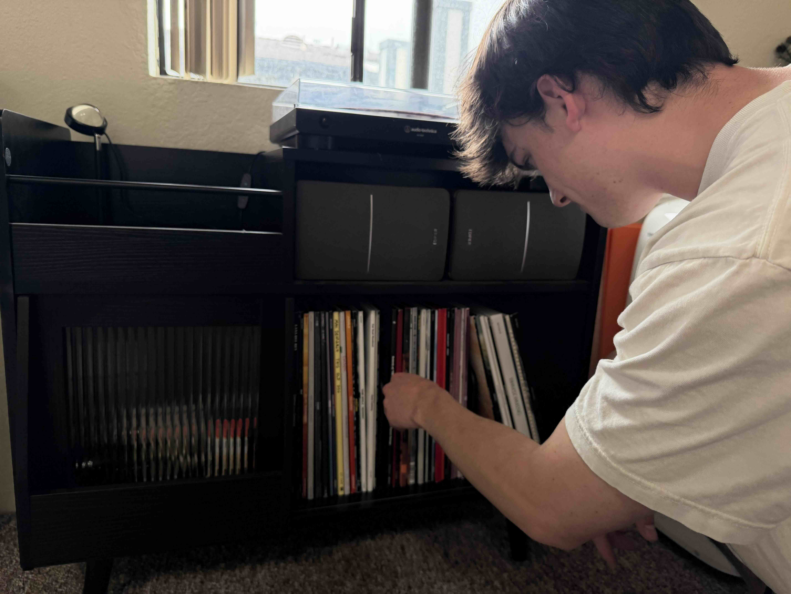

WORD ON THE STREET
"What does owning physical music mean to you?"
Ben Andrews

Corbin Fuchs

Natalia Lugassy
CLICK AN IMAGE TO PLAY | DOUBLE-CLICK TO PAUSE
College kids grew up on streaming music. Now they're buying records.
According to the Recording Industry Association of American RIAA, vinyl sales in the United States surpassed $1 billion in 2025, marking the first time since the early 1980s that the format has reached this milestone. This growth isn't sudden, it actually represents the 19th consecutive year of increasing vinyl sales.
I got my first vinyl this past Christmas. Let me set the scene. It's Christmas Eve night at my dad's side. We're doing white elephant, the party game where everyone brings a wrapped gift and the whole night turns into a cheerful little war of swapping and stealing. Most gifts are candles or soaps and someone even bought a Costco snack pack, but sitting there in all its glory, the masterpiece Purple Rain (1984) by Prince. Nobody looked twice at it. Which meant it was all mine. Here's the thing though, I didn't own a turntable. I'd never bought a record in my life. My entire music library lives on my phone, neatly organized by Apple Music for a forced price of $10.99 a month. This night bought me a question that began to pick apart my brain:
Do people my age still listen to vinyl, let alone care to collect?
In an era where streaming has made music more accessible than ever, it has also made it feel increasingly disposable. Why is Gen Z turning to vinyl? What is the story behind collecting vinyl as a college kid? Turntables in a dorm room? The growing popularity of vinyl in Gen Z suggests that listeners are pushing back against that convenience, seeking something more meaningful and tangible.
In You Spin Me Right Round, I dive into the importance of vinyl and what it really means to the Gen Z collectors in this age of physical v.s. digital.
"You can't skip on vinyl, you have to sit and listen and experience how the artist wanted"— Ben Andrews
This collection follows Ben Andrew's easy step-by-step guide to nudge Gen Z beginners into the world of vinyl, from buying your first record player to starting a personal collection.

Choose the record that will set your mood for the next 40-45 minutes (depending on the album). Here, Ben Andrews, a 2nd year software engineer major, browses through his vinyl collection. 5/12/26
Time to commit to the album. Ben selects MM..FOOD by MF DOOM and carefully pulls it from its sleeve, bringing a mix of hip-hop, jazzy beats and sharp lyrics to your ears. "You can't skip on vinyl, you have to sit and listen and experience how the artist wanted" Ben says 5/12/26
Place the record onto the turntable and try NOT to leave fingerprints. As Ben places MM..FOOD down, and presses play, you can finally watch the art start to spin. This part of the ritual becomes part of the experience. 5/12/26
Listen, dance and let your music become part of your space. Here on Ben's apartment wall are some of his favorite vinyls from this month. 5/12/26
As the record comes to an end, you know what to do. Ben lifts the cover to pick a new album. Wash, rinse, repeat. 5/12/26
"What does owning physical music mean to you?"
Ben Andrews
Corbin Fuchs

Natalia Lugassy
CLICK AN IMAGE TO PLAY | DOUBLE-CLICK TO PAUSE
Meet Natalie, a Cal Poly 2nd year student with a vinyl collection that goes far deeper than her "pop princess persona."
"I love owning physical copies of albums because of their timelessness. It's great knowing that even if an online streaming service is down, I can still listen to this music I love."
"What was your gateway vinyl?" Here is a collection of people's first bought albums, and the first songs that kicks them off.